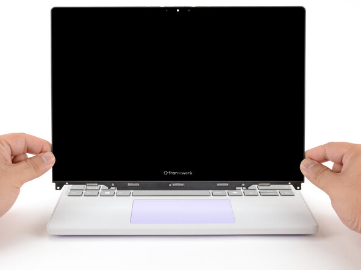
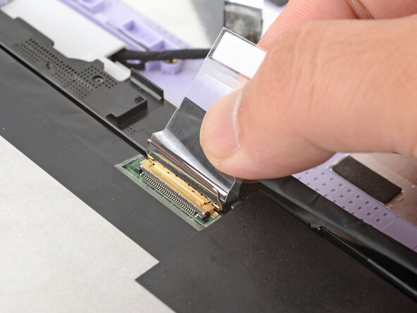

Diagnose a blank laptop screen and qualify a donor panel
Separate a no-boot fault, a panel fault and an internal display cable fault before swapping a matched donor part.
Identify the parts between the picture and the motherboard
The screen includes the panel and its driver electronics. A separate harness carries display data and power through the hinge area. In an LCD, the backlight makes the image visible. A touchscreen adds a touch-sensing path, which can fail while the picture still looks normal. In a donor lid assembly, the hinges, webcam, antennas and parts of the enclosure can also be present.

Photo by Arthur Shi and iFixit contributors, scaled with on-page callouts. Original repair photographs · CC BY-NC-SA 3.0.

Photo by Arthur Shi and iFixit contributors, scaled with on-page callouts. Original repair photographs · CC BY-NC-SA 3.0.
Watch. Look for how Framework removes the screen without twisting it, and where it supports the loose panel while working around cables. The video demonstrates a Laptop 13. The illustrated procedure for the worked Laptop 12 is linked below. Framework’s display, webcam and mainboard upgrade demonstration.
Start with the lid and case intact
- Establish that the laptop starts. Observe power and diagnostic codes. Connect a working external display through a known-good lead to an output documented for that laptop. Use the manufacturer’s pre-boot display test if supported. Some external outputs are enabled later than the internal screen, so a blank external screen during startup has limited value by itself.
- Record what is present. Check whether the internal screen shows a startup logo, its brightness changes, and whether the symptom appears before the OS. For a dark LCD, shine a flashlight obliquely across the front while you know there should be a picture. A faint image points to the backlight path. That includes the panel, cable and motherboard supply.
- Stop if the hinge binds or the lid is already separating. If a dropout occurs during ordinary use, note the angle and direction once. Avoid repeated flexing of a damaged hinge or cable.
| Observation | Next comparison |
|---|---|
| External display works and the internal image is faint | Investigate the LCD backlight path. Use an exact known-good panel or cable one at a time and repeat the same pre-boot check. |
| Both displays remain blank and the laptop reports a memory diagnostic code | Work the no-POST branch first. See P91 isolate modules and slots. |
| Lines follow the same spot on the internal panel across test images | Record the result and compare with a matching working panel. The symptom alone cannot exclude the connector and cable. |
| Picture stays good and touch stops responding | Run the manufacturer’s touch test where available. Compare touch coverage and check the touch connector or cable where it is separately serviceable. |
Match the donor before connecting it
Record the recipient’s exact model, panel label, cable label and service part numbers. Use the OEM parts list or the panel and cable specifications to establish compatibility. A matching screen size or matching pin count alone tells you little about signal type, pinout, voltage, resolution, refresh rate, touch support, mounting or cable reach. eDP and legacy LVDS are different interfaces. This lab uses a known compatible part. Leave legacy high-voltage backlight inverters and improvised panel power supplies outside the exercise.
- Use both manuals for the job. On the Framework Laptop 12, the display guide shows the lower cover, panel mounts and panel connector. For the isolation used in this lab, follow the eDP cable guide’s power-off and battery removal steps before moving the display connector. Use the exact model’s guides for any other laptop. Official Laptop 12 display guide · Official Laptop 12 cable and battery steps.
- Document before lifting. Photograph screw positions, brackets, routing and grounding tape. Support the panel, keep fingers on its edges, and open the model’s specific latch. On this Laptop 12 panel side the locking bar releases before the connector slides out. This is a cold connection. Reconnect the battery only after the cable, lock and insulation are restored and the machine is assembled to the service guide’s test state.
- Change one part. A known-good cable with the original panel tests one hypothesis. A known-good panel with a proven cable tests another. A complete donor lid can establish that the fault follows the lid, then the single-part comparisons can narrow it down.
Release a part with evidence
With the laptop assembled, record the panel and host models, firmware image, normal startup, brightness range, solid black, white and primary colours, sleep and wake. If equipped, test touch to all four edges. Operate the lid through its normal range once if the hinge is sound. Record marks, dead pixels or case damage as separately observed defects. If the panel has never shown a stable image on a proven compatible host, tag it untested.
One intake photo, one connector photo and a short result for each configuration. State exactly which single change restored the image or write “fault isolated to display path” if the evidence does not identify a part.